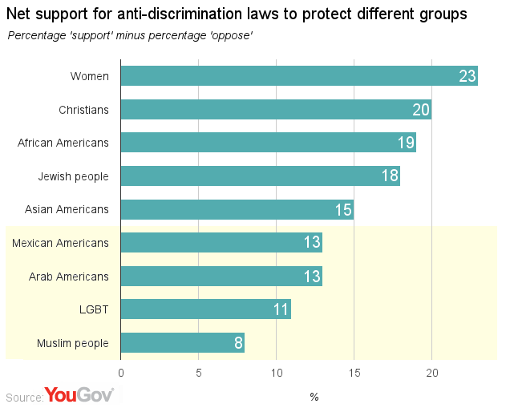

donlindsay.github.io |
code sources github/donlindsay irc channel xk05 on #emacs |
| GRUFF
"The free-form nature of triple-stores offers a lot of flexibility for constructing databases, but that freedom can also make it less obvious how to find arbitrary data for retrieval, error-checking, or general browsing." :uri <http://franz.com/agraph/gruff/> OWL2 and RDF Graphs: http://www.w3.org/TR/owl2-mapping-to-rdf/ W3 OWL2 RL Profile: http://www.w3.org/TR/owl2-profiles/#OWL_2_RL Gruff readable Turtle format triplestore repository https://raw.githubusercontent.com/donlindsay/n3/master/n3.n3 https://raw.githubusercontent.com/donlindsay/n3/master/owl2.n3 https://raw.githubusercontent.com/donlindsay/n3/master/schema-rules.n3 mx-mode A rules system for Org Mode based on the W3 OWL 2 Rule Language Recommendation. Org Mode Agenda Tags, based on OWL2-RL: https://raw.githubusercontent.com/donlindsay/mx-rdf-functions/master/owl2-tags-list.org (Basic tags, no logic) Check the repository for current work on reasoner functions. OWL2 and RDF Graphs: http://www.w3.org/TR/owl2-mapping-to-rdf/ SYSTEMD-FUNCTIONS Some systemd support code. systemd-functions: https://github.com/donlindsay/systemd-functions BTMUX-TR An informal technical reclaimation study of a realtime, multi-pilot, remote vehicle control, telemetry and logistical simulation. https://github.com/donlindsay/btmux-tr APPENDIX On Discrimination: This is a chart showing some statistics of anti-discrimination support by Americans from YouGov.org. (note: I cannot verify the accuracy of these statistics)  link: https://today.yougov.com/opi/ I don't necessarily endorse YouGov. However, neither do I endorse illegal discrimination. Copyright 2014 Don Lindsay See license statements for individual packages and repositories. |
|